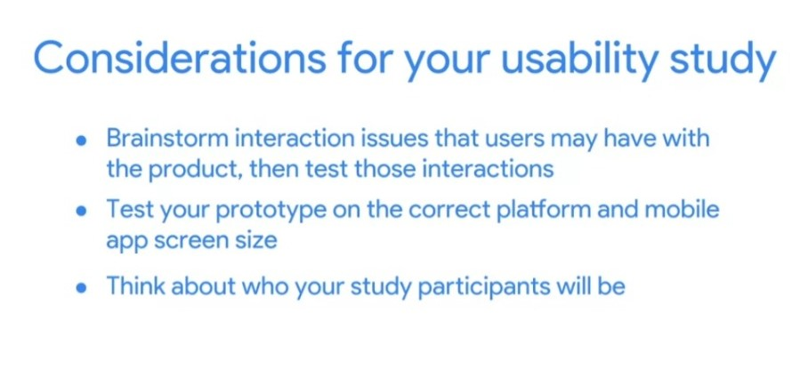
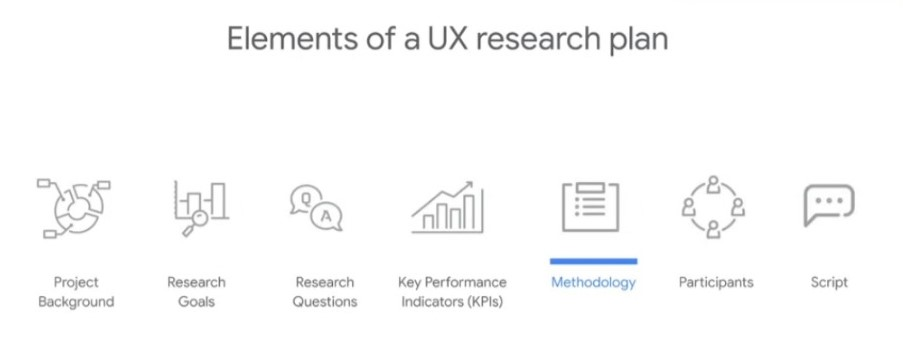
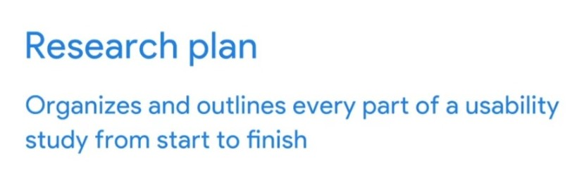
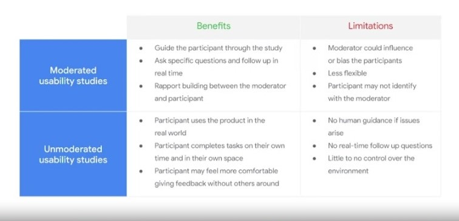
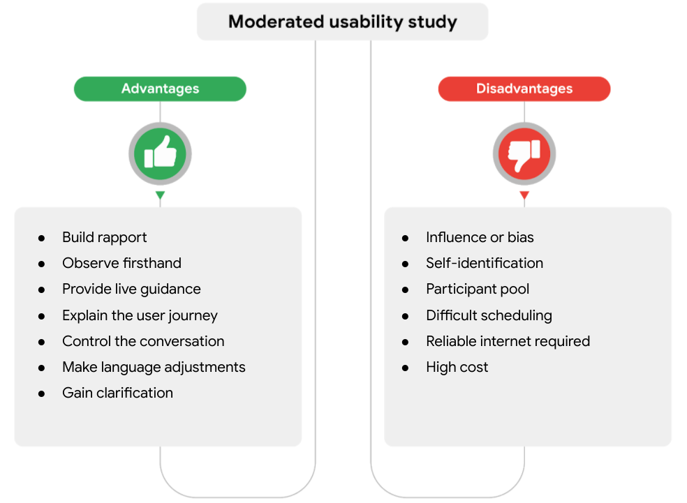
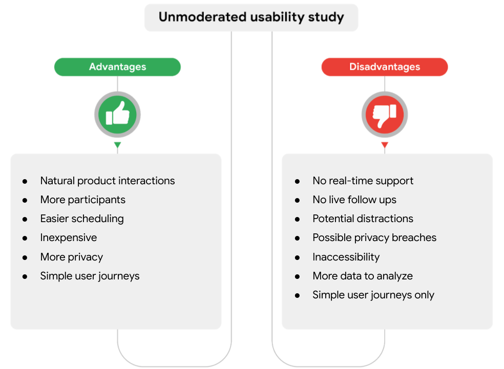
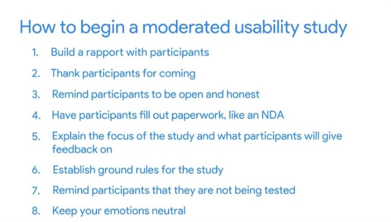
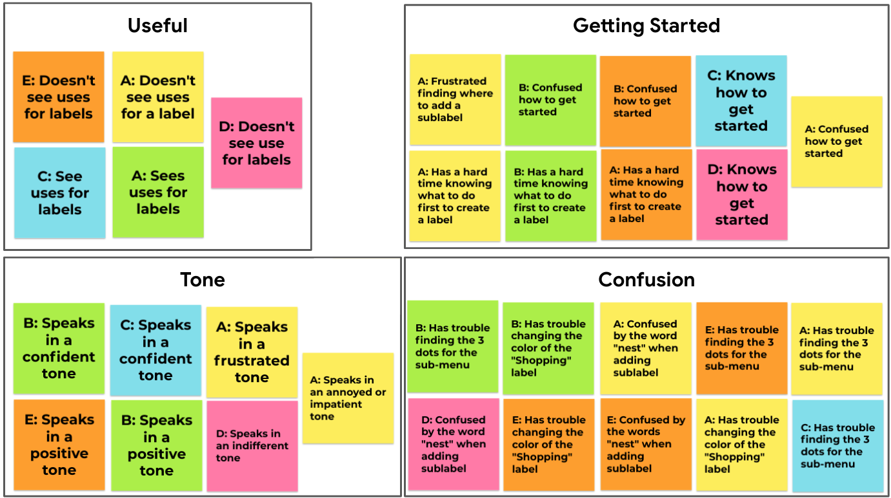
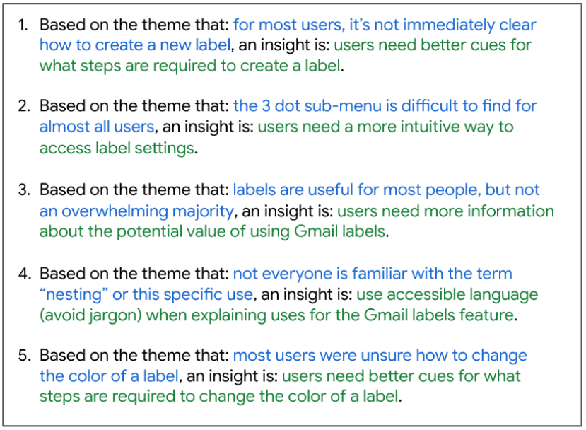

Planning UX-Research studies
In this course, you’ll continue to design a mobile app, in alignment with the project prompt from Sharpen that you selected earlier in the program. You've made your way through the empathize, define, ideate, and prototype phases of the design process for your app designs. Now, you're ready for the test phase, which is what this course is all about. You will learn how to plan and conduct a usability study to test your designs with users and gather feedback. Then, you'll modify your designs based on insights from your research.
There are four steps in a UX research study.
- The first step is to plan the study. To plan a study, start by outlining the background for the project. Next, set goals for your research, and write down the questions you want to answer. Then establish the steps you'll take to conduct the study and select the people who will participate in the study. The work you do while planning the research study is incredibly important since it impacts every other part of your research. You need a proper plan to get successful research results.
- The second step is to conduct the research. During this step, you'll gather data. There are several techniques you can use, but the one we'll focus on in this course is called a usability study. A usability study is a research method that assesses how easy it is for users to complete core tasks in a design. The goal of usability study is to identify pain points that the user experiences with your designs so the issues can be fixed before the final product launches. During a usability study, you get a chance to see how users interact with your new product or feature. You can also interview users to learn more about their experience.
- The third step is to analyze and synthesize your results. This involves trying to find the actual meaning in the data. You want to figure out why the data is the way it is. Look for patterns in the quantitative data and explore trends in the qualitative data from participants' answers to interview questions.
- The last step is to share and promote your insights with the project's stakeholders. Project stakeholders are people who are involved in the project or who will be impacted by its results. Project stakeholders need the results of your research and need to agree with the direction of the project. For example, your project stakeholders might include other designers, the head of your department, or the engineers who will help bring your design to life. To share and promote your insights, you need to create a presentation. Your presentation should include the method you use to conduct your research, the data you collected, the conclusions you reached based on that data, and your recommendations for acting on those conclusions. The stronger the connection between your research conclusions and your recommendations, the more likely it is that your stakeholders will take the actions you've proposed. Why is conducting a UX research study important?
The goal of user experience research is to prioritize the user. A UX research study helps us gain an understanding of users' problems in order to solve them. It can also help bridge the gap between what a business thinks the user needs and what the user actually needs before an expensive and time-consuming product is made.
Language and communication in UX research

-
Language and communication matter.
When it comes to UX research, written and spoken language play a very important role in the success of your product and the feedback you receive about your designs. Language is the primary tool you’ll use for collecting data, building relationships with research study participants, reporting research findings to your team, and representing the users you’re designing for.
The language you use while conducting research directly affects the language your participants use. Your understanding of the best language to use in any given situation will continually shift as you learn the ins and outs of conducting UX research. Using appropriate language while conducting research is an ongoing process!
-
Consider word choices
When conducting research, it’s important that you understand your own ideas on language use, as well as the ideas other communities have about language. This way, you can better identify and avoid your own biases about language use. All languages are important and complex, and they deserve to be represented equally.
Keep in mind that some languages and language varieties express the same concepts in different ways. As the UX designer conducting research, it’s your responsibility to seek clarification on language differences and to ensure the translations of participants’ insights are accurate.
There’s no right or wrong way to communicate an idea, but language often reveals hidden power imbalances. When conducting research, you want to make sure you’re communicating in a way that’s inviting, not commanding. For example, avoid using words that are considered ableist, or words that assume a person does not have a disability.
Overall, your goal when conducting research is to make participants feel welcomed and valued for who they are.
-
Keep the context in mind
You also need to consider the context that the research is happening in, such as the physical space where the research study is taking place. You want participants to feel like there’s an equal power dynamic between them and you as the researcher. For example, if one person is sitting and the other person is standing, there’s an unequal power dynamic and the situation can feel awkward or off putting.
Some portions of your research studies might need to be adjusted to meet participants where they are. Different communities have different ways of interacting with others in various situations, so it’s important to be aware of those cultural differences. For example, some cultural groups take turns when speaking, while others feel free to interrupt whenever they have a great idea. In other words, one research study participant might consider interrupting to be rude, while another might think that interrupting shows engagement in the conversation. In your role as a researcher, you need to be aware of context changes and pay close attention to how participants prefer to communicate to create an equitable environment for all participants.
UX Research Plan
There are seven elements that your plan should include:
-
Project background.
The project background answers the question: What led you to conduct this research? You don't have to provide a long drawn out history, just a few lines is good. You might explain the project background like this: We're creating a new app to help people find and schedule dog walkers. We need to find out if the main user experience, finding and scheduling a dog walker, is easy for users to complete.
This element summarizes the situation leading to the needs for this research. It's a brief explanation you can give to anyone who asks why you're doing this research.
It’s important to identify signals that indicate why the research is necessary. Why is the research being conducted? What problems is the design trying to solve? If there is no user problem, people may not understand the project’s necessity.
A clear project background also shows you understand why you're doing this research and promotes confidence in the overall quality of your analysis and insights. The value of this might not be apparent when you're planning your study, but it will be when you present your research to people who have the power to act on your recommendations.
Now that you know why the project background is an important part of a research plan, you're ready to create your own. Keep these three things in mind, as you write the project background:
- Identify the signals that indicated research was necessary. Ask yourself why you're doing this research and if there's a problem you're trying to solve.
- Describe any previous research that has been conducted or solutions that have been tried. How have previous attempts brought us closer to solving the problem?
- List insights the research will generate. A great insight inspires clear action and uses simple language. In the project background, include how the insights will be used and what decisions will be made based on those insights. There might be a lot of information, but keep the project background concise so that everyone on your team will read it.
-
Research goals.
What design problems are you trying to solve? And how will the results of the research impact our design decisions? Use your answers to create goals for your research project. In our example, one research goal might be: determine if the dog walker app is difficult to use. We need to consider the ease of use in order to understand why customers join our app and leave or stay.
Research goals state the specific ideas that you want to learn from the research or what you would like the outcomes of the research to be. Research goals help you understand what is the bigger picture of doing this research. If you run research before you start the design process, your research goal should help you understand why or if you should build the product.
Research before starting design project is a foundational research. You want to make sure that there's a real need for the product.
Research during design phase called a design research and it will give you the answers you need to move forward through the design process with confidence.
Finally, if you run research on a product after it has been launched, your research goals help you understand if the product worked as expected. This type of research is called post-launch research, and the goals reflect whether you have successfully completed what you set out to do.
-
Develop detailed research questions for your plan
What are the questions your research is trying to answer? For example, our research questions might be, how long does it take a user to find and book a dog walker in the app? And what can we learn from the user flow or the steps that users take to book a dog walker?
Why are research questions important? They guide your research. Research questions provide focus and structure for your research study. In addition, research questions will be the main topics you cover in your presentation. A few quick tips for writing research questions:
- A good research question should be actionable. You should be able to identify a clear way to attempt to answer the question. You should know when you've found the answer you're looking for.
- Make sure your research questions are specific and not too broad. You want to answer specific questions and produce meaningful data.
- And make sure your research questions aren't leading. Questions should be neutrally phrased so that they don't sound like you're assuming a particular answer to your question.
-
Key performance indicators, or KPIs
Any time you conduct research, you want to have a way to measure the effectiveness of your product or prototype. To do so, use key performance indicators (KPIs), which are critical measures of progress toward an end goal.
As a reminder, key performance indicators are critical measures of progress toward an end goal. You might ask, how can you measure your progress toward the research goal? For our app, one thing we should track is how many users in the research study complete their search for a dog walker. So the KPI would be the percentage of users who book a dog walker.
- Time on task measures how long it takes for a user to complete a task. A task can involve any function within the product you’re designing, such as filling out a form or making a purchase. To measure time on task, all you need is a timer! Start timing the user when they begin the task you’ve assigned, and stop timing as soon as they completed the task.
- Use of navigation vs. search indicates the number of people who use a website or an app’s navigation, compared to the number of people who use the search functionality. In other words, some users will prefer to use the navigation bar to get around your product, while others will go straight to the search bar, type in a query, and be directed to part of the product.
- User error rates indicate the parts of a design that cause users to make errors. For example, a user might click on the wrong icon when trying to make a purchase, forget to check a box, or submit incorrect information when filling out a form. These errors are not the user’s fault! Instead, user error rates help point to areas where you need to make improvements to the design of the user experience.
- Drop-off rates show how many users abandon the experience. In other words, this KPI reveals how many users quit before reaching the end of a purchase or some other endpoint you’re trying to lead them to. Users might quit using your product if the navigation is difficult to understand, if they get frustrated while trying to complete a task, or if they simply get bored.
- Conversion rates measure the percentage of users who complete a desired action. Conversion rates are the opposite of drop-off rates. Any time a user successfully completes a task, meets a goal, or makes it to the final destination of your product, it’s a conversion. Think of the dog walker app as an example: The user needs to take multiple steps to find and reserve a dog walker. The conversion rate will show the percentage of users that actually made it to the end of the flow and booked a reservation.
- A System Usability Scale (SUS) is a questionnaire that asks participants their opinions about your product; the results are used to measure the usability of your designs. In an SUS, users are asked the extent to which they agree or disagree with 10 statements about the usability of a design. For example, users might be asked to respond to the statement: “I thought the app was easy to use” on a scale from “strongly disagree” to “strongly agree.” It’s a quick and reliable way to know if a design is working.
- The Net Promoter Score (NPS) is a measure of how loyal users will be to your product or service. The NPS measures the likelihood that a user would recommend your product to a friend or colleague. Participants rate the question, “Would you recommend this product to a friend or colleague?” on a scale of 0 to 10. Promoters are participants who give a rating of 9 or 10, which means they would recommend your product to others. Passives are participants who give a rating of 7 or 8, which means they are satisfied with your product, but they probably won’t pass it along to friends or colleagues. Detractors are participants who rate from 0 to 6, which means they could warn people away from your product or service.
-
Methodology.
The first few steps of your research plan—the introduction, research questions and KPIs—focus on the aim of the research, the questions you’ll focus on trying to answer, and how you’ll measure the information you receive. After planning this part of your research study, it’s time to think about how you’ll collect the information. In other words, determining what the methodology will be.
This is where you document the steps you'll take to conduct your research. How will you collect data and how will you analyze the data once you get it?
-
Participants
As you develop your UX research plan, you’ll outline a group of participants to include in the study and collect feedback from. The participants in your study should represent your product’s potential users. These participants play a big role in shaping your designs because you’ll take their pain points and suggestions into account as you iterate.
To find out if users are able to find and schedule a dog walker in our new app, we might want to conduct a survey of prospective users. To analyze the survey results, we will use a spreadsheet and identify trends. In addition, your research plan lists the research participants. Who will you survey? What characteristics do the participants have? For example, you might want to recruit participants who are dog owners with full-time jobs and who go out for activities more than once a week. The types of participants you select should be based on your research goals. Also, make sure that participants you select do not bias your results.
Usability study benefit from recruiting participants with diverse abilities because learning how someone with specific needs might use a product a usability study can identify how someone with specific needs and abilities might use a product. This is a crucial part of the UX research and design process because it also supports making products accessible to a wide range of users.
Your research plan should include a list of the primary characteristics of the people you will recruit to participate in the study. The types of participants you select should be based on your research goals and the target users of the product you’re designing.
The best way to check if potential participants meet your desired characteristics and represent a diverse set of individuals is with a screener survey. A screener survey is a detailed list of questions that help you determine whether potential participants meet the requirements of the research study.
As you create a screener survey, remember that getting feedback from participants with diverse backgrounds, perspectives, and abilities is extremely important for ensuring that your designs are accessible and equitable. A representative sample is a small group of participants who represent both your target user group and user groups that are often marginalized. And a marginalized population is one where people have specific characteristics and life experiences that prevent them from fitting into what society inaccurately defines as “normal,” such as people with disabilities or people with limited access to technology. Collecting feedback from a representative sample will help you enrich the overall user experience on your product.
In an effort to be inclusive of people of all abilities when you’re recruiting participants for your usability study, your first instinct might be to seek out people based on their disability status. But directly asking someone’s disability status limits people to only one aspect of their identity: their disability. Disability status can be considered Sensitive Personally Identifiable Information, which is illegal to inquire about in many situations. Instead of recruiting participants who are visually impaired, hearing impaired, or who have physical impairments, recruit participants who use the assistive technologies you want to involve in your study. For example, seek out participants who use:
- Screen readers
- Closed captions
- Switch devices
- Keyboard-only navigation
- Magnification devices or magnified screens
- Any other assistive technologies that will provide insights about your UX design
The abbreviation a11y (pronounced “A eleven Y”) is used to refer to accessibility. It’s shorthand for representing the 11 letters between the letter “a” and the letter “y” in the word “accessibility.” More importantly, a11y resembles the word “ally,” which reflects the idea that UX designers need to be allies to people with all types of abilities.
Designing for accessibility isn’t an obstacle, but a way to get your products to as many users as possible. In other words, designing for accessibility benefits everyone!
-
script the questions you ask study participants as they test your product
The script is also known as the discussion guide. Make sure these questions are specific in speaking to the KPIs you're trying to measure. For instance, you could ask, did you face any challenges when trying to book a dog walker in the app?
Research team build tasks based on the research goals to come up with effectiveness for a usability study. Usability tasks should be based on research goals written in the research plan. The tasks should be specific, make participants take action, and avoid providing clues on how to complete the tasks.
A well-rounded script is:
- Open-endedTask and follow-up questions encourage discussion and reflection rather than short "yes or no" responses
- ObjectiveTasks and follow-up questions don’t try to lead participants toward a particular answer or introduce the researcher’s personal bias
- Goal orientedTasks and follow-up questions relate directly to the research goal
In addition to your tasks and follow-up questions, a script should always include an introduction at the beginning. This will allow you to gather important demographic data, set a professional tone for the interview, and help your participant feel comfortable.
- Ask for the participant’s consent to record the interview
- Inform the participant that the interview is not a test, and that no answer is wrong
- Assure the participant that it’s okay to ask questions, and explain why their data is being collected
- Ask for basic information that gives you insights into the participant’s relationship with the product and helps them settle into the interview
Respect user data and privacy
For ethical reasons, when conducting research we should always act with integrity, and that includes protecting users' privacy.
- One reason is privacy laws and ethics. If you don't maintain your users' privacy, you could be violating the law.
- Risk of hacking. You need to secure sensitive data to avoid getting hacked and risk hackers sharing users' data without their consent.
- privacy and data security is important is for protecting your company's brand. In other words, this is about ensuring that your users perceive your brand positively based on their experience with you. By emphasizing data protection, you gain their trust. And even though your research participants aren't necessarily customers, their perceptions about you and your company matter.
There are two main types of data you need to protect.
- personally identifiable information, or PII. This is made up of specific details that could be used to identify a user. This includes names, home addresses, email addresses, and phone numbers.
- sensitive personally identificòable information, or SPII, and it's even more critical. SPII is data that, if lost, compromised, or stolen could cause your users financial harm or embarrassment, or potentially lead to their being discriminated against. This includes social security numbers, driver's license numbers, passport numbers, financial account numbers, date of birth, race, disability status, gender, sexuality, criminal history, and medical information.
Privacy and security practicies
- be transparent about data collection.
- collect user data that's absolutely essential for your study
- get active consent from your users to have their data collected and used. Active means that participants have chosen to take part in a study
- detail about how you'll use participants' information and protect their privacy
- allow users to withdraw at any time
- inform users of who will have access to their data
- clearly explain how you plan to store and delete users' data once it's been used
Safety of research data, which includes three main concerns:
- data recording
- data storage
- data retention
Conducting research with usability studies
Usability studies are a research method that assesses how easy it is for participants to complete core tasks in a design.
During a usability study, researchers follow participants as they interact with the product. The user's feedback helps the design team make important improvements to the user experience. Usability studies can take place at various points in the design process.
You can conduct a usability study when you have an early idea, like a lo-fi prototype that is only somewhat interactive. Often this is called concept testing. You can also conduct a usability study when you have an interactive prototype. This is the most common time to conduct the study because it gives the design team insight on what needs to be revised or added before the product launches. You can even conduct the usability study with a product that is complete. You may want to change a feature of the product or test if the product is usable with a specific group of people.
While the user feedback might not all be positive, it will always make the product better.
There are two types of usability studies: moderated and unmoderated.
Moderated usability studies have a person, known as a moderator, guide participants through the study in real time. Because a person facilitates the session, moderated usability studies allow for rapport building between the moderator and participant, which can help the participant open up and share more feedback about the design. Moderated studies work best when you want to dig into the details because you can ask follow-up questions throughout the session to learn more.
Unmoderated usability studies have participants test the prototypes without human guidance. Participants move through the study at their own pace and often in their own environment. Usually, the study is recorded on video, and the UX team reviews the video footage after the study. Unmoderated studies can be advantageous because they more closely simulate how a user would interact with the product in the real world.
Explore the advantages and disadvantages of usability studies
 How to begin moderate usability study
Usability study best practices
A usability study is at its best when participants come from diverse backgrounds and have varying abilities. The unique life experiences, perspectives, identities, and abilities of participants will inform the feedback they provide about your designs. Your goal is to create designs that work for all types of users, so learning from a diverse pool of research participants is key
Reducing biases when interviewing participants
Biases that might occur when you moderate usability studies. Remember, a bias is favoring or having prejudice based on limited information. It's important to call out that all humans are susceptible to bias.
The key is to identify and become aware of these biases so that you can guard against them. Identifying your own personal biases can be challenging, because biases usually unconscious, a lot of times we don't even realize we're experiencing it. But if you know what biases you have, you can take steps to minimize their effects.
- Implicit bias or unconscious bias, is the collection of attitudes and stereotypes we associate to people without our conscious knowledge. These attitudes and stereotypes are often negative, exclusionary, or disempowering. When recruiting participants for usability studies, any implicit biases you have against a particular user group might impact your expectations for how those participants will interact with the product.
- Serial position effect, is a psychological bias that states that when given a list of items, people are more likely to remember the first few and the last few while the items in the middle tend to blur.
- Friendliness bias describes the tendency of people to agree with those they like in order to maintain a nonconfrontational conversation. If you are too friendly and develop too strong a rapport with participants, there's a chance participants will want to agree with you in order to avoid confrontation. This can stop participants from giving honest feedback. Your goal is to improve the product's design. So remind participants that you actually need honest feedback in order to improve the product.
- Social desirability bias is a tendency for people to answer questions in a way that will be viewed favorably by others
Analyze and synthesize the results
Field research focuses on collecting first-hand observations, while traditional research concentrates on compiling data. Traditional research focuses on defining trends in the marketplace, while field research collects data on those trends.
When you synthesize something, you combine ideas to draw conclusions. What does that mean for us? Well, when UX designers synthesize research, we group data into themes. We want to find insights that evolve our understanding of users and their needs. That last part is really key. A synthesis evolves our understanding. For example, remember how 4 of the 5 participants in our usability study said they want to be able to book a dog walker repeatedly? By grouping these shared frustrations, we can understand how crucial this problem is and figure out ways to solve it -- this is our insight.
After we discover insights, we're ready to iterate on our design. Iterate means we revise the original design to create a new and improved version. UX design is all about coming up with an idea, getting feedback from participants or users, and iterating to make the idea better.
You've carefully planned your UX research study and conducted the research with a participant. You're ready to turn your observations from the research into actionable insights.
let's review what an insight is in the field of UX design. You might remember that an insight is an observation about people that helps you understand the user or their needs from a new perspective. Insights can help us figure out how different pieces of data relate to each other. Insights also help explain what data means and what to do with it. How can we come up with a list of insights? I'm glad you asked. In just four steps, we can turn the observations from our research into actionable insights.
-
Gather all of the data
from our usability study in one place. We might have collected data in various formats such as stacks of sticky notes, a spreadsheet, audio notes, or even a notebook with our scribbles. You also need to gather together the notes from everyone who observed the usability study.
You now need to gather everyone sticky notes in one place. Then it's time to organize the data so that it's easier to interpret or understand. One method you can use to organize data is called affinity diagramming.
An affinity diagram is a method of synthesizing that organizes data into groups with common themes or relationships. Affinity diagramming is a quick and easy way to gather observations during a usability study and synthesized data. To make an affinity diagram, you need all of the observations from participants to be on sticky notes.
When creating an affinity diagram, you should cluster the sticky notes into groups of common themes and patterns.
In addition, affinity diagramming helps you think outside of the box. The interactive and visual format of affinity mapping allows you to make connections within your data that you may not have noticed by simply reading through your notes. This helps you think of new, creative ways to solve user problems
- Organize the data. This is where we take the data gathered in step 1 and arrange it. If you wrote your observations on sticky notes, you might use a method called affinity diagramming to organize your data. You'll learn more about this later. If you used spreadsheet notetaking to record your observations, you've already started organizing the data without even realizing it.
- Find themes in the data. One of the key goals of user research is to identify themes that are common across participants. These themes help us to turn our data into insights about the users. You'll find that UX designers and researchers often use the words, patterns, and themes interchangeably. Technically, they're a little different, but for the sake of simplicity, we're just going to use the word theme.
-
Come up with insights for each theme
.We want to write an insight that tells the design team how to improve the product based on a theme. Depending on the amount of data you've collected, you should be able to come up with a handful of themes and insights.
You've now learned how to gather all of the data from your research in one place, organize that data so it's easy to understand, and find themes in the data.
check out five qualities of strong insights.
- Strong insights are grounded in real data. Insights need to be based solely on what you observed during the research study, not what you felt at the time. And each insight should be supported by multiple pieces of data. Insights are strongest when they apply to multiple study participants instead of just one.
- Strong insights need to answer the research questions you listed in your research plan. You want to tie your insight to the research questions to help people understand why the insight matters. In our example usability study, the research questions were: How long does it take a user to find and book a dog walker in the app? And what can we learn from the user flow, or the steps that users take, to book a dog walker? We'll need to come up with insights that answer either or both of these questions.
- Strong insights should be easy to understand. Keep in mind that your stakeholders might not have been involved in the planning of your study, but you still want them to understand your insights. Use simple language that doesn't require detailed knowledge of the study. If you randomly shared your insight with a friend, they should understand what you mean. For example, an insight for our usability might be: When users have to select a date, they prefer to see a calendar. This insight tells the team that users find it easier to pick a date in a calendar format instead of a list.
- Strong insights increase empathy for the user experience. Empathy increases the team's engagement because they put themselves in the user's shoes. That extra level of commitment can fuel their enthusiasm to improve the product.
- Strong insights inspire direct action
Insights identification example

Designer take that insight and start building around the problem a new solution, which can help fix the problem. Fall in love with the problem, and don't fall in love with the solution itself. When you fall in love with the problem, then you can start identifying new and different and novel ways on solving that problem, which you might not necessarily think of if you hone in on the solution which that particular participant gave you. Now, that solution might work for that participant, but we're not designing for one person, we're designing for millions and billions of people. We got to find a solution which works for a wide variety of people and not necessarily for a subset of people. In the process of solution design, which comes after a study is complete, it is very important to really understand not only what the problem was, but also why the problem occurred in the first place. Once you fall in love with the understanding of the problem, then you are much more equipped to come up with solutions and find solutions which might not have been thought of in the first place.
-
A presentation is a group of slides where each slide has new information. Presentations provide your stakeholders with a high-level overview of the project. Tips for creating UX research presentations that keep your audience engaged: Tip 1:
- Know your audience. Before the presentation begins, take time to find out what the people you're presenting to are interested in learning about, then tailor your presentation accordingly. A personalized approach keeps your audience engaged during your presentation and increases your ability to gain their support for your project.
- Provide an overview. Include a short roadmap or "table of contents" at the beginning of your presentation, so your audience knows what to expect throughout the presentation. Your roadmap should almost be like a checklist that the audience can follow along, so they have a vision for how much content is left to cover. In addition, one slide should feature an overview of the content you’re presenting, also known as an executive summary. It’s kind of like sharing your conclusion or biggest takeaways at the beginning of the presentation. Be sure to discuss how your research impacts the big picture, like how the product would support the company’s goals and objectives. When your audience understands the overall goal of the presentation and your product from the start, they’ll have a better context for specific details and stories you provide later.
- Tell a story. Think of your presentation as a story with a beginning, middle, and end. Each slide should push the story you’re telling forward, and the story should flow from slide to slide. Part of telling an effective and engaging story is including examples of actual users, such as quotes, photos, or short video clips from interactions with users. Storytelling is more powerful than sharing a list of research insights because your audience can observe the emotions, pain points, and delights of your product from a real user’s point of view.
- Show numbers. A strong image often communicates more clearly than words. Use data, graphs, and charts to illustrate your most important insights. Your goal is to keep the attention of your audience, so let the images and data you show speak to your audience and strengthen the story you’re telling.
- Less is more when it comes to text. Keep the information you present short and to the point. Your slides should only include high-level details that answer questions like why, what, and how. Try to include minimal text on your slides so that the audience doesn't spend time reading while you're presenting. If necessary, you can add additional resources in the appendix of your presentation for the audience to review later.
- Provide recommendations for next steps. End the presentation with a list of recommended next steps based on the insights you presented. Your recommendations might include changes to make to the product designs, additional research to conduct, or future meetings to schedule. This step helps gain support from stakeholders and will put the pieces in place to move forward in the design process. It's a best practice to clearly state your recommendations on a single slide.
- Leave time for questions. At the end of your presentation, be sure to leave a few minutes so your audience can ask questions about the material you presented and can clarify any points. This is also a great opportunity for you to provide more details about areas that your audience is interested in learning more about.
- A research report is a document with fewer visuals containing the same information as the presentation. This allows stakeholders to quickly read the actionable information.
A presentation is a group of slides where each slide has new information. Presentations provide your stakeholders with a high-level overview of the project.